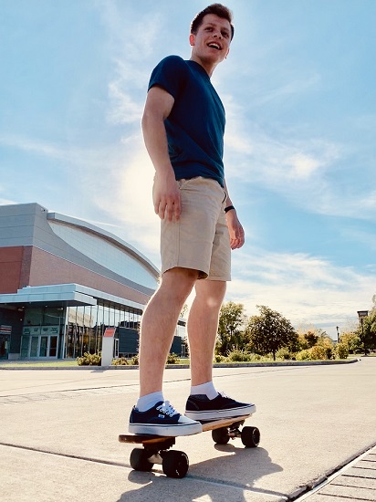

Nick Baker's 235 Page
About Me
I am a second year Game Design and Development major and 3D Digital Design minor. I like to make lots of fun and expressive art in my free time, and I take every opportunity I can to combine that passion with my classwork. I have been developing community-made maps for Valve games such as Team Fortress 2 and Counter Strike: Global Offensive for 6 years, and I even helped develop a map professionally: Cursed Cove. Using what I've learned from these projects, I have been able to work on my own games such as Scarlet Meadow and Neon Pong (see video above or click here).
My goal with every project is to mix my passion for art and characters with my passion for programming and design. I can't wait to gain more experience with HTML, CSS, and Javascript in this class so I can make more professional looking websites. I'm looking forward to programming browser games as I think are a great way to quickly share projects with other people without the requirement of downloads or installs.
So far, my time at RIT has been pretty enjoyable. I've made a good amount of friends, and I've had the opportunity to work with great people. When I graduate, I hope to have the experience to work on large projects with professional level teams and to incorporate my passion of art into them in some way.